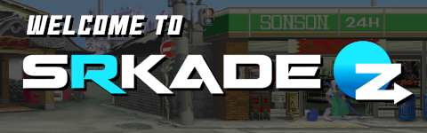

INFORMATION:
INFORMATION:
SRKade is a USA/UK based emulation server that brings people together to play classic games online.
This server was founded by Bev and BluETurbo back in 2019.
In 2023 we were given the server and will continue to do what they did.
We mainly focus on fighting games (Tekken, Mortal Kombat, Street Fighter, etc) but play other genres from time to time.
NOTE: THESE ARE DELAY BASED GAMES AS MOST GAMES BACK THEN DID NOT HAVE ROLLBACK NETCODE. EXPECT WHAT THEY GOT IN THE 2000-2010's